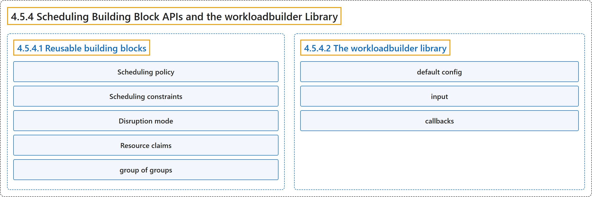

4.5.4 Scheduling Building Block APIs and the workloadbuilder Library
Classification

Glossary
| Term | Definition | 中文翻译 | Source |
|---|---|---|---|
| 4.5.4 Scheduling Building Block APIs and the workloadbuilder Library 调度构建块 API 与 workloadbuilder 库 |
"Workload-aware Scheduling defines a set of reusable API building blocks under the scheduling.k8s.io API group." |
工作负载感知调度定义了一组可复用的 API 构建块，位于 scheduling.k8s.io API 组下。 |
The Kubernetes Authors, n.d., "Scheduling Building Block APIs and the workloadbuilder Library", para. 4 |
| 4.5.4.1 Reusable building blocks 可复用的构建块 |
"The building blocks are strongly-typed Go structs in the scheduling.k8s.io/v1alpha3 API group." |
这些构建块是强类型的 Go 结构体，位于 scheduling.k8s.io/v1alpha3 API 组中。 |
The Kubernetes Authors, n.d., "Reusable building blocks", para. 1 |
| Scheduling policy 调度策略 |
"The scheduling policy block carries the same basic and gang policies as a PodGroup's spec.schedulingPolicy." |
调度策略块携带同样的 basic 和 gang 策略，同 PodGroup 的 spec.schedulingPolicy 一样。 |
The Kubernetes Authors, n.d., "Scheduling policy", para. 1 |
| Scheduling constraints 调度约束 |
"The scheduling constraints block carries the topology constraints documented in Topology-aware workload scheduling" | 调度约束块携带拓扑约束，记载于拓扑感知工作负载调度 | The Kubernetes Authors, n.d., "Scheduling constraints", para. 1 |
| Disruption mode 干扰模式 |
"The disruption mode block selects whether the group's Pods may be disrupted individually (single) or only as a unit (all)" |
干扰模式块选择组内 Pod 是可以单独被干扰（single），还是只能作为整体被干扰（all） |
The Kubernetes Authors, n.d., "Disruption mode", para. 1 |
| Resource claims 资源申领 |
"The resource claims block expresses which dynamic resource allocation claims are shared by every Pod in the group rather than allocated per Pod." | 资源申领块表示哪些动态资源分配申领由组内每个 Pod 共享，而不是按 Pod 分别分配。 | The Kubernetes Authors, n.d., "Resource claims", para. 1 |
| group of groups 组的组 |
(context) "Multi-level controllers that orchestrate other controllers (for example, JobSet creating Jobs) coordinate a group of groups." | （语境）多级控制器会编排其他控制器（例如创建 Job 的 JobSet），它们协调一个组的组。 | The Kubernetes Authors, n.d., "Composite building blocks", para. 1 |
| 4.5.4.2 The workloadbuilder library workloadbuilder 库 |
"workloadbuilder is a shared Go library that turns a controller's scheduling intent into the scheduler-facing Workload and its runtime PodGroup/CompositePodGroup objects" |
workloadbuilder 是一个共享的 Go 库，它转换控制器的调度意图，得到面向调度器的 Workload 及其运行时 PodGroup/CompositePodGroup 对象 |
The Kubernetes Authors, n.d., "The workloadbuilder library", para. 1 |
| default config 默认配置 |
"a default config, the controller's own defaults for anything the user leaves unset." | 默认配置：控制器自身的默认值，针对用户未设置的任何内容。 | The Kubernetes Authors, n.d., "How a controller uses it", para. 2 |
| input 输入 |
"an input, the user's intent taken from the controller's API." | 输入：用户的意图，取自控制器的 API。 | The Kubernetes Authors, n.d., "How a controller uses it", para. 3 |
| callbacks 回调 |
"optional callbacks, which adjust the merged configuration." | 可选的回调，用于调整合并后的配置。 | The Kubernetes Authors, n.d., "How a controller uses it", para. 4 |
References
The Kubernetes Authors. (n.d.). Scheduling Building Block APIs and the workloadbuilder Library. Kubernetes Documentation. Retrieved October 31, 2026, from https://kubernetes.io/docs/concepts/workloads/workload-api/workloadbuilder/